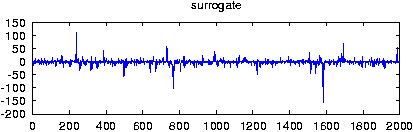

randomize_auto_exp_random -D# [-W#]
[-n# -u# -I# -o outfile -l# -x# -c# -V# -h
-T# -a# -S# -s# -z# -C# -X xfile]
file
Note: if neither -a nor -C are given, the annealing will keep starting over with slower cooling rates. This may be necessary if good guesses are not available but of course, multiple surrogates will have to be made by further separate calls.
-D number of lags for autocorrelation
-W type of average: 0=max(c), 1=|c|/lag, 2=(c/lag)**2, 3=max(c)/lag (default 0)
-n number of surrogates (default 1)
-u improvement factor before write (default 0.9 = if 10% better)
-I seed for random numbers (0)
-l maximal number of points to be processed (default all)
-x number of values to be skipped (0)
-c column to be read (1 or file,#)
-o output file name, just -o means file_rnd(_nnn)
-V verbosity level (0 = only fatal errors)
-h show usage message
-T initial temperature (default: automatic melting)
-a cooling factor (default automatic)
-S total steps before cooling (default 20000)
-s successful steps before cooling (default 2000)
-z minimal successful steps (default 200)
-C goal value of cost function (default zero)
-X file containing list of indices excluded from permutationverbosity level (add what you want):
1 = input/output
2 = current value of cost function upon printable improvement
4 = cost mismatch
8 = temperature etc. at cooling
16 = verbose cost if improved
32 = verbose cost mismatch
> randomize_auto_exp_random -o -D50 -T0.005 -a0.95 -C0.001 spike.dat gnuplot> plot 'spike.dat' gnuplot> plot 'spike.dat_rnd'
